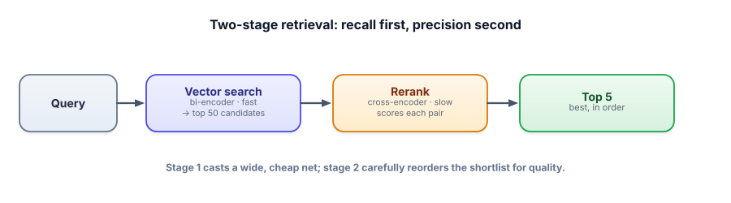

Retrieval & reranking
Retrieval gives every chunk a similarity score against the question.
Top-k keeps the k highest, for example the best 3.
A similarity threshold also drops any chunk whose score is too low, even if it made the top k.
If nothing passes, the honest answer is “I don't know”, and you never call the model at all.
A reranker can then re-read the shortlist next to the question and put the truly best chunk first.
Hiring with two rounds: a recruiter skims 500 CVs in an afternoon by keywords and picks 50, then the hiring manager actually reads those 50 against the job and picks 5. The recruiter is fast and rough (the bi-encoder); the manager is slow and careful (the cross-encoder).
| In the picture | In the real system |
|---|---|
| The recruiter skimming 500 CVs | Stage 1: fast vector search returns many candidates (e.g. 50) |
| The shortlist size | k: how many chunks you keep |
| “No one met the bar” for the job | The threshold: below it, refuse instead of guessing |
| The hiring manager reading each CV | Stage 2: a cross-encoder reranker scores (query, chunk) pairs |
Where the picture breaks. A manager can ask the recruiter for more CVs; a reranker can only reorder what stage 1 handed it, so if the best candidate was not in the 50, it is gone.
Move k and the threshold, and switch questions. Green chunks reach the prompt, red ones made the top k but failed the threshold, and grey ones were never in the top k.
Going deeper
Vector search is fast but a little blunt — it ranks by similarity, which isn’t the same as relevance. Reranking adds a second, smarter pass that reads each candidate against the query and reorders for quality. This two-stage pattern is one of the biggest, cheapest wins in RAG.
Why “similar” isn’t “best”
Your embedding model encodes the query and each chunk independently, then compares the vectors. That’s what makes it fast — you can pre-embed everything — but it also means the model never looks at the query and a chunk together, so it can miss fine-grained relevance. A chunk can be broadly on-topic (high similarity) yet not actually answer the question. The fix is a reranker: a model that takes the query and one candidate chunk as a pair and scores how well that chunk answers that query.
A bi-encoder embeds query and document separately, so similarity is a fast vector comparison (this is your retriever). A cross-encoder feeds the query and a document together through a model to produce a single relevance score — far more accurate, but far slower (you must run it per candidate). The standard design is two-stage retrieval: use the fast bi-encoder to fetch many candidates (high recall), then the slow cross-encoder to rerank them down to the best few (high precision).

See the funnel and the reorder
Type a question. Stage 1 returns a shortlist by a fast text score; “Rerank” re-scores those candidates more carefully and reorders them. Watch ranks shift — that reordering is the whole value.
Retrieve → rerank
Both stages use simple text scores so this runs in your browser; real systems use embeddings (stage 1) and a trained cross-encoder (stage 2). Same funnel, same reorder.
Retrieve broadly with embeddings, then rerank with a free cross-encoder for precision.
!pip install sentence-transformers
from sentence_transformers import SentenceTransformer, CrossEncoder
import numpy as np
bi = SentenceTransformer("all-MiniLM-L6-v2") # stage 1: retriever
ce = CrossEncoder("cross-encoder/ms-marco-MiniLM-L-6-v2") # stage 2: reranker (free)
chunks = [...] # your corpus
index = bi.encode(chunks, normalize_embeddings=True)
def search(query, fetch=50, keep=5):
# stage 1: fast, wide net
q = bi.encode([query], normalize_embeddings=True)[0]
cand_idx = np.argsort(index @ q)[::-1][:fetch]
cands = [chunks[i] for i in cand_idx]
# stage 2: careful rerank of the shortlist only
scores = ce.predict([(query, c) for c in cands]) # reads query+chunk together
reranked = [c for _, c in sorted(zip(scores, cands), reverse=True)]
return reranked[:keep]You only run the expensive cross-encoder on the 50 candidates, not the whole corpus — that’s what makes two-stage affordable. Reranking often improves answer quality more than swapping to a bigger LLM, for a fraction of the cost.
Assumptions: 30 M chunks, 120 queries per second at peak, a MiniLM-size cross-encoder that scores about 2,000 (query, chunk) pairs per second on one GPU at your chunk length (an assumption: benchmark it yourself, it varies with hardware and sequence length).
- Why not cross-encode everything? One query against all 30 M chunks = 30 M pairs / 2,000 per second = 15,000 s, over four hours per query. That is why stage 1 exists.
- Rerank 50 per query. 120 QPS x 50 = 6,000 pairs per second, so 6,000 / 2,000 = 3 GPUs at peak, with no headroom. Latency per query: 50 / 2,000 = 25 ms if the batch gets a GPU to itself.
- Rerank 20 per query. 120 x 20 = 2,400 pairs per second, 1.2 GPUs, so 2 with headroom; latency 20 / 2,000 = 10 ms.
- Is 20 enough? Check recall@20 and recall@50 of stage 1 on your golden set. If recall@20 = 0.93 and recall@50 = 0.96, reranking 50 can at best recover 3 more points of questions. Decide whether 3 points is worth one extra GPU.
- Keep narrow. After reranking, send the top 5 into the prompt. 5 chunks x 400 tokens = 2,000 tokens instead of 20,000 if you had stuffed all 50: at $2 per million input tokens (Anthropic models overview, checked 2026-11-03) that saves 18,000 x $2 / 1 M = $0.036 per query, about $15,500 an hour at a sustained 120 QPS (120 x 3,600 = 432,000 queries). The reranker pays for itself.
- Bi-encoders are fast but blunt (independent embeddings); cross-encoders are accurate but slow (read the pair together).
- Two-stage retrieval: bi-encoder fetches many (recall), cross-encoder reranks to a few (precision).
- You only rerank the shortlist (e.g., 50 → 5), which keeps the expensive step affordable.
- Reranking is often a bigger quality win than a bigger LLM, and cheaper.
- Tune two numbers: how many to fetch (stage-1 recall) and how many to keep (stage-2 precision into the prompt).
Your RAG retrieves the right chunk into the top 20, but it’s ranked #14 and your prompt only includes the top 3 — so the model never sees it. Cheapest effective fix?
What does a reranker add after initial retrieval?
Stage-1 recall@50 is 0.97 and recall@5 is 0.71. You add a cross-encoder over the top 50 and keep 5. What is the best possible recall@5 after reranking?
1. Why can’t you just run the cross-encoder over your entire corpus and skip the bi-encoder?
2. Your reranker is great but adds 300 ms per query and you have a tight latency budget. Name two levers to manage the cost.
3. Retrieval recall@20 is 0.99 but answer quality is mediocre. Is reranking likely to help? What about if recall@20 were 0.6?
▸ Show solutions & reasoning
1. Because the cross-encoder must run the model on every (query, document) pair — for a million chunks that’s a million forward passes per query, hopelessly slow. The bi-encoder pre-computes document vectors once and reduces a query to a few fast comparisons, narrowing to a shortlist the cross-encoder can afford to score. The two stages exist precisely to make precision affordable.
2. (a) Rerank fewer candidates — score the top 20 instead of 100; less work, slightly lower ceiling. (b) Use a smaller/faster reranker model, trading a little accuracy for speed. (Bonus: cache rerank results for repeated queries.) Tune against your latency budget and a quality target.
3. At recall@20 = 0.99, the right chunk is almost always in the candidate set — it’s just ordered poorly, so reranking (which reorders) is exactly the cure. At recall@20 = 0.6, the right chunk is often not retrieved at all, so reranking can’t help — you can’t reorder what isn’t there. Then the fix is upstream: better chunking, a better embedding model, hybrid search, or fetching more candidates. Reranking improves ordering, never recall.
Two refinements make reranking even better. First, diversity: top results are often near-duplicates (three chunks saying the same thing), wasting prompt space. Maximal Marginal Relevance (MMR) re-ranks to balance relevance with novelty, so your top-k covers more distinct information — valuable when a question needs facts from several places. Second, fetch wide, keep narrow: the most common tuning is increasing how many candidates stage 1 returns (raising the chance the right chunk is somewhere in the shortlist) while keeping the number you actually put in the prompt small (so the model isn’t diluted). Recall is stage 1’s job; precision is stage 2’s.
The strategic insight: in most RAG systems, retrieval is the bottleneck, not generation. Teams reflexively reach for a bigger, pricier LLM when their real problem is that the right evidence isn’t making it into the prompt. Adding a reranker, fetching more candidates, and (next lesson) blending in keyword search usually buys more answer quality per dollar than any model upgrade. Fix what reaches the model before you upgrade the model.
labs/03_rag_local.pyFree and offline once set up: Ollama with qwen2.5:7b, plus the packages in labs/README.md. From the course folder:
python labs/03_rag_local.pyWhat to look for: Honest note: the lab has no cross-encoder stage; it does dense retrieval, BM25 and RRF fusion. Use it to see the precondition for reranking: print the top-20 from dense retrieval for a few golden questions and note at which rank the correct chunk sits. If it is in the top 20 but below rank 3, a reranker would help; if it is missing from the top 20, no reranker can. To try a real reranker, add sentence-transformers' CrossEncoder (the worked example above) on top of the lab's top-20 list.
Small samples: these labs use 5 to 20 cases so they run in minutes on a laptop. Where they report a rate, they print n and a 95% Wilson interval. Read them as a demonstration of the mechanism, not as a measured rate for your system; for that you need hundreds of cases and several seeds.
▸ Recorded output (our run, 2026-11-03, qwen2.5:7b on a laptop GPU)
out of the top 3. On this tiny corpus dense already wins; hybrid earns its keep on big corpora full of
near-identical codes (SKUs, error ids) that embeddings blur. Never assume: measure hit@k (lab 06).
5) Grounded answers with citations, and a refusal when retrieval is weak
Q: I was charged twice for one order. What happens now?
A: If you were charged twice for one order, the duplicate payment is reversed automatically within 3 business days [pay-01#0]. If it is not reversed after 3 business days, raise a billing ticket with both transaction ids.
citations=['pay-01#0'] all-cited-ids-were-retrieved=True
Q: Can I change my delivery address after the order has shipped?
A: No, you cannot change your delivery address after the order has shipped. According to [ship-03#0], the address can only be changed before the order is packed.
citations=['ship-03#0'] all-cited-ids-were-retrieved=True
Q: Do you deliver to Antarctica by drone?
A: I don't know based on our policies. (refused before calling the LLM: best cosine 0.27 < 0.35)
citations=[] all-cited-ids-were-retrieved=True
Look: every factual sentence carries an id you can check; the off-topic question is refused
cheaply by the retrieval threshold, so the model never gets a chance to make something up.Your numbers will differ a little run to run. Full log: labs/outputs. Source: labs/03_rag_local.py.
Warm-up. Your reranker scores 1,500 pairs per second. You rerank 40 candidates per query. What is the reranking latency per query and the maximum QPS on one instance?
▸ Solution
Latency = 40 / 1,500 = 0.0267 s, about 27 ms. Max QPS = 1,500 / 40 = 37.5 queries per second per instance, assuming perfect batching. Real systems leave 30-50% headroom, so plan for about 25 QPS per instance.
Transfer. Your top 5 after reranking are often three near-duplicate chunks from copies of the same FAQ. Answers miss facts that live elsewhere. What do you add, and where?
▸ Solution
Two fixes. Upstream, dedupe at indexing time with a content hash or near-duplicate detection so copies are not indexed separately. At query time, apply Maximal Marginal Relevance (MMR) after reranking: pick the top chunk, then repeatedly pick the chunk that balances high relevance with low similarity to those already chosen, controlled by a lambda weight. That spends the 5 prompt slots on distinct facts. Measure with an eval that includes multi-fact questions, since single-fact questions will not show the gain.
Stretch. You have a budget of 15 ms for reranking at 300 QPS. Propose two architectures and the evidence you would collect to choose.
▸ Solution
Option A: a smaller cross-encoder over fewer candidates (say 20) on GPUs sized for 300 x 20 = 6,000 pairs per second at under 15 ms per batch. Option B: a late-interaction model (ColBERT-style) or a distilled reranker that precomputes token vectors for documents so query-time scoring is cheaper, at the price of more storage. A third, cheap option is caching rerank results for frequent queries. Evidence: on the golden set, nDCG@5 and recall@5 for each option; p95 latency under a load test at 300 QPS; GPU count and storage cost. Pick the cheapest option that meets the quality bar and the 15 ms budget.
Junior What is the difference between a bi-encoder and a cross-encoder?
▸ Model answer
A bi-encoder embeds the query and each document separately into vectors and compares them with cosine similarity. Document vectors are computed once in advance, so search is fast. A cross-encoder takes the query and one document together as a single input and outputs a relevance score. It sees how the words interact, so it is more accurate, but it must run once per pair at query time. That is why we use the bi-encoder to shortlist and the cross-encoder to rerank the shortlist.
Mid How do you choose how many candidates to retrieve and how many to keep?
▸ Model answer
Fetch depth is about recall: I plot stage-1 recall@k for k = 10, 20, 50, 100 on the golden set and see where it flattens. Rerank depth costs latency and compute linearly, so I pick the point where extra candidates stop adding recall. Keep depth is about the prompt: few enough that the model is not diluted and tokens stay cheap, enough to cover multi-fact questions, usually 3 to 8. Then I verify end to end with faithfulness and answer correctness, because the best retrieval depth is the one that gives the best answers.
Senior A team wants to upgrade from a mid-size LLM to a frontier model to fix bad RAG answers. How do you decide whether a reranker is the better spend?
▸ Model answer
I look at where the failures are. On a few hundred failing cases I check whether the answer-bearing chunk was in the prompt. If it is usually missing from the prompt but present in stage 1's top 50, the fault is ranking, and a reranker fixes it for a fraction of the cost of a bigger model. If the chunk is in the prompt and the answer is still wrong, it is a generation issue, and the bigger model or better grounding may help. I also price both: model upgrade is per-token on every call; a reranker is fixed GPU cost and often reduces prompt size. The eval decides, not the hype.
Semantic search has a blind spot: exact terms, codes, and rare words that embeddings smear together. Keyword search nails those. Combine them and you get the best of both. Next: hybrid search.
In one line: Keep the best few chunks that are actually good enough, and say “I don't know” when none are.